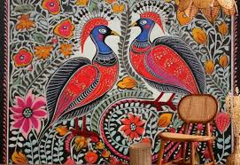
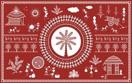
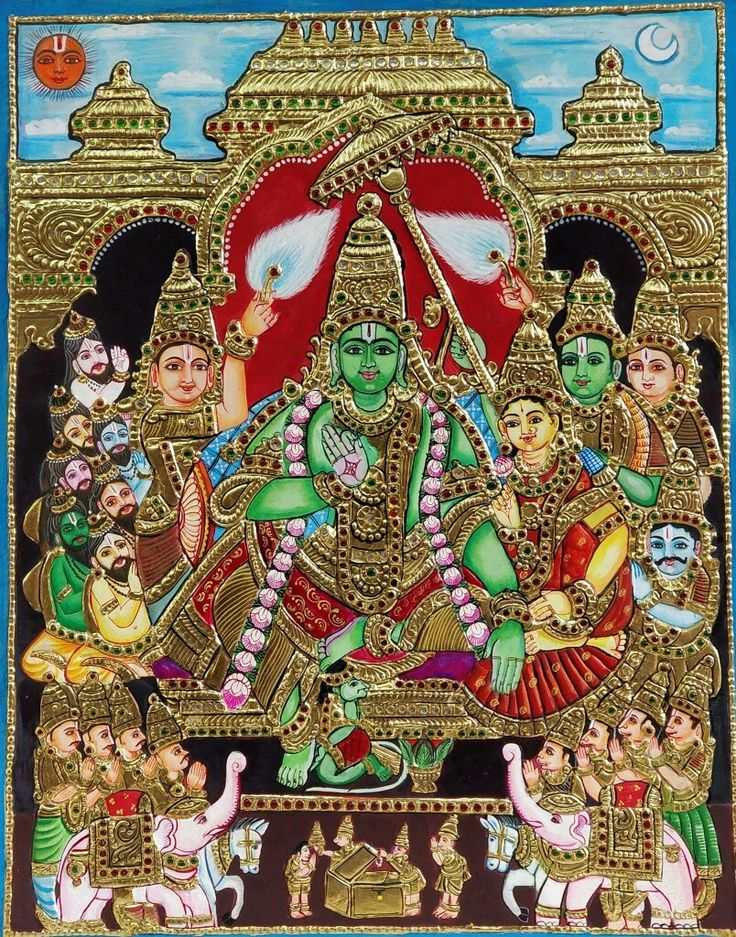

Art & Architecture of India
India’s art and architecture reflect the soul of its civilization — a breathtaking blend of creativity, devotion, and craftsmanship. From intricate temple carvings to colorful folk paintings, every piece narrates a story rooted in faith and tradition.

Madhubani Painting

Warli Art

Tanjore Painting

Pattachitra

Miniature Art

Kalamkari

Phad Painting

Gond Art

Chittara Art

Cheriyal Painting

Rogan Art

Bhil Art

Pahari Painting

Kangra Painting

Saura Art

Chamba Rumal

Phulkari

Sanjhi Art

Batik

Block Printing

Mysore Painting

Bharni Painting

Chitrakathi Art

Kantha Embroidery

Phad Miniature

Thangka Art

Madhya Pradesh Lacquerware

Meenakari

Bidriware

Terracotta Art

Dokra Art